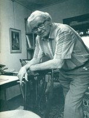

Deze audiotour gaat over de expositie "Offerschatten" in Hal 1 van de MuseumFabriek.
Deze audiotour is nog in ontwikkeling. Er ontbreken nog enige luisterpunten en sommige foto's gaan we binnenkort vervangen. We konden het echter niet laten om wat we hebben alvast aan te bieden.
Veel plezier met deze geweldig interessante expositie!

Hoe boerenfamilies leefden in een Twents Los Hoes.

Audiotour bij een selectie uit het werk van de Enschedese schilder Klaas Bernink